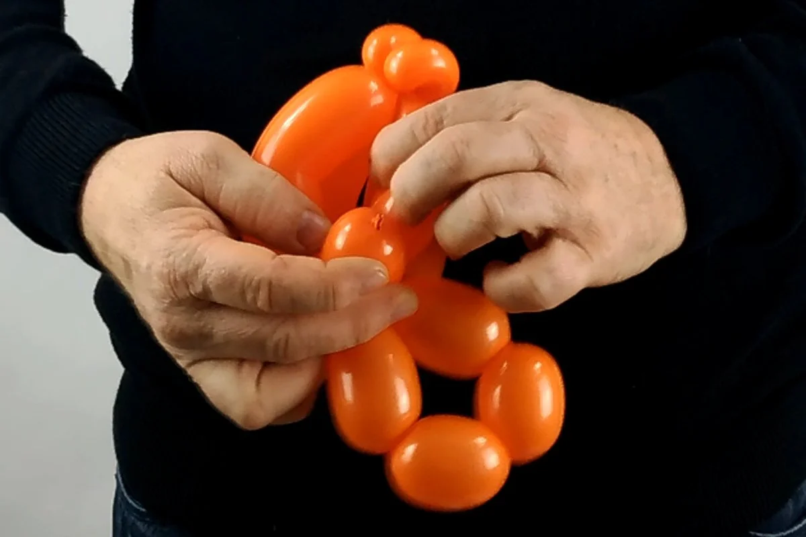

1- You will need an orange (or any other color) "260" modeling balloon for the body, and a small regular (round) white balloon for the eyes.2- Inflate the orange "260", leaving the equivalent of about five (or even six) fingers wide not inflated.3- Form one large "sausage" bubble right after the knot (about three fingers wide).4- Then form a second "sausage" bubble, but smaller than the first one (about two fingers wide).5- Then form a third "sausage" bubble, exactly the same as the second one (about two fingers wide).6- And finally form a fourth "sausage" bubble, exactly the same as the first one (about three fingers wide).
7- You should now have this series of "sausage" bubbles: a long one, then a small one, then a small one again, and finally a long one, just like the first one.8- Attach the series of bubbles together together, by pulling the balloon knot and turning it a few times around its base and through the loop it formed.9- Once it is secured, form a long bubble that should be about as long as full hand.10- Hold it, while forming a perfectly round bubble right after it.11- Transform that round bubble into a pinch twist.12- Then form another round bubble of the same size, 13- which you will also transform into a pinch-twist.14- Then form another long bubble that will be the exact same length than the one between the 2 pinch-twists and the loop.15- Twist these two long bubbles around their base to join them together.16- Then form a third bubble, the same length as the two long bubbles we just joined together.17- And attach it to them by turning the remnant of the balloon around their base (which is also the base of the two pinch-twists).18- If the remnant of the balloon is a bit too long, 19- do a small incision with a scissor (or even a needle) at the tip of it to let the air escape a bit before tying a knot..20- The idea is two divide the remnant of the balloon into two bubbles of unequal length. 21- The first one should be a bit longer (but much smaller than the 3 long bubbles that have been joined together.22- And the last one should be smaller than the previous one.23- Now pull and twist the base of this small bubble all the way between the three long bubbles and the loop. The tension will curve the three longer bubbles a bit.

24- Once it is done, lodge that last small bubble in the midst of the cluster formed by the four other bubbles: the three longer curved bubbles and the shorter straight one (that one will be the bottom base of the fish) 25- Now take the very first loop of bubbles we made, and press the crease formed between the two smaller bubbles against the crease formed between the 2 longer bubbles.26- This should enable you to easily twist each small bubble with its longer counterpart, to form the tail of the fish.27- Now inflate the small round white balloon. It should be a bit less voluminous than the tail we just formed.28- Divide the round balloon in two equal size bubbles. It's a bit tricky at first, although not much different than making a regular bubble with a modeling balloon (except the round balloon is fatter and shorter, thus harder to handle).29- Take back the orange body of the fish and lodge one of the white bubble under the top curved orange bubble (the one at the opposite of the shorter straight one) , bringing it as close to the two pinch-twists as possible.30- Then find the very last small bubble that was made with the remnant of the orange balloon and lodge its tip between the 2 white bubbles, thus securing them and filling in any gap. 31- Take a black marker and draw the eyes on the white bubbles.32- There, the balloon is finished! You could simply stop here if you wanted too.33- However, if you had the time and the material, you could add one last detail by inflating a transparent "260" modeling balloon, but only halfway.34- And with it, make a series of alternating round bubbles and pinch-twists.35- The last bubble of the series should be inserted back half way in the series, against another bubble or pinch-twist, to form a small cluster.36- You can then attach it to the fish any way you prefer. You could put it directly at the mouth, while I prefer it on the side, to give an impression of movement.Aren't they super cute? And you soon! For another lesson... with Môssieur Ballon!